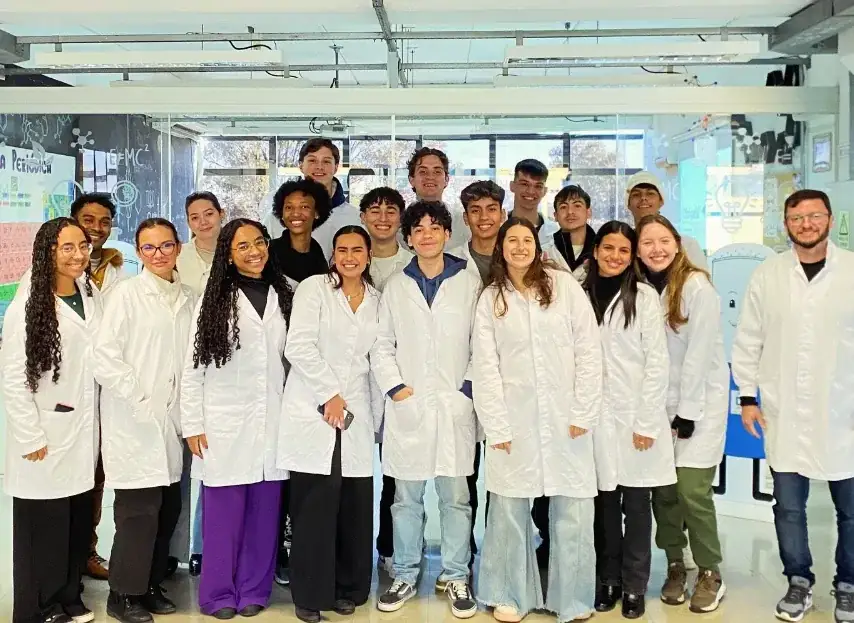
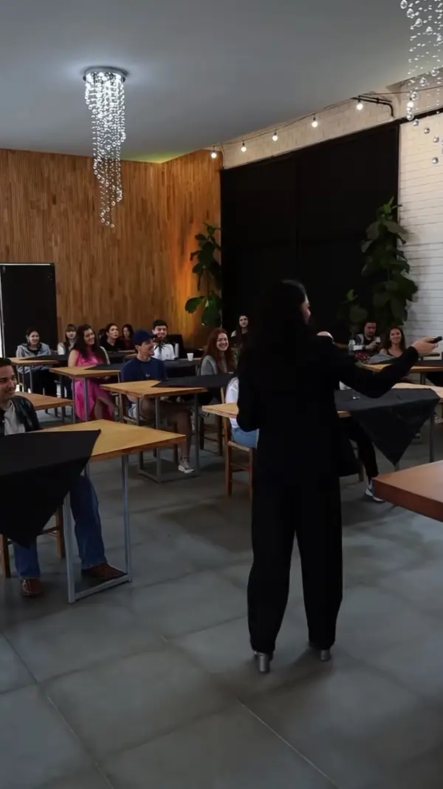

Missão
[A CONFIRMAR] Conforme o Plano de Desenvolvimento Institucional (PDI).
Faculdade Nine
A Nine Academia de Influência está se tornando a Faculdade Nine: uma instituição de ensino superior em Curitiba, mantida pelo Conselho Educacional Nine.

Acreditamos que todo jovem precisa descobrir seu propósito no início da vida adulta. E que esse propósito não fica só dentro da igreja: ele vai para os negócios, a política, a educação, a arte, a ciência e a comunicação.
A formação da Nine se apoia em três pilares: conhecer a própria identidade, treinar habilidades e inspirar o mundo ao redor.
[A CONFIRMAR] Conforme o Plano de Desenvolvimento Institucional (PDI).
[A CONFIRMAR] Conforme o PDI.
[A CONFIRMAR] Conforme o PDI.
Raul Cesar Sindlinger, Diretor-Geral. A Ouvidoria é vinculada diretamente à Direção-Geral.
Órgão colegiado superior da Faculdade. Composição: [A CONFIRMAR]
Conduz a autoavaliação institucional, nos termos da Lei nº 10.861/2004. Composição: [A CONFIRMAR]
Atendimento acadêmico: contato@nine.com.br · Telefone [A CONFIRMAR]
A composição atualizada do CONSUP e da CPA é publicada em Transparência Institucional.
Aula, oficina, serviço e convivência: a formação acontece dentro e fora da sala.

